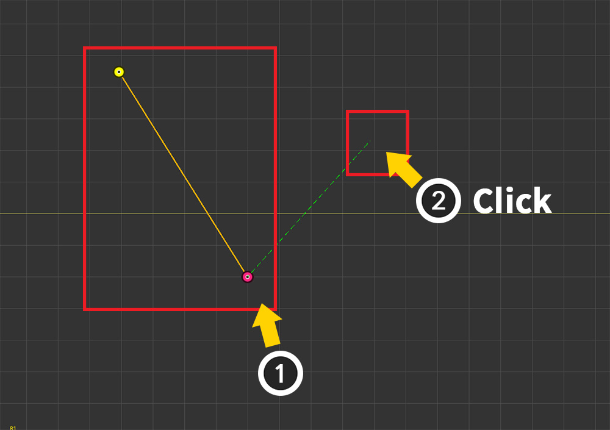
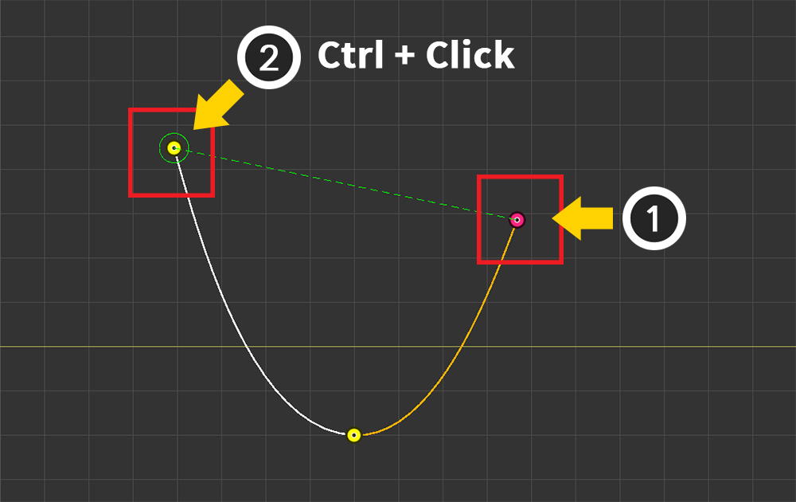
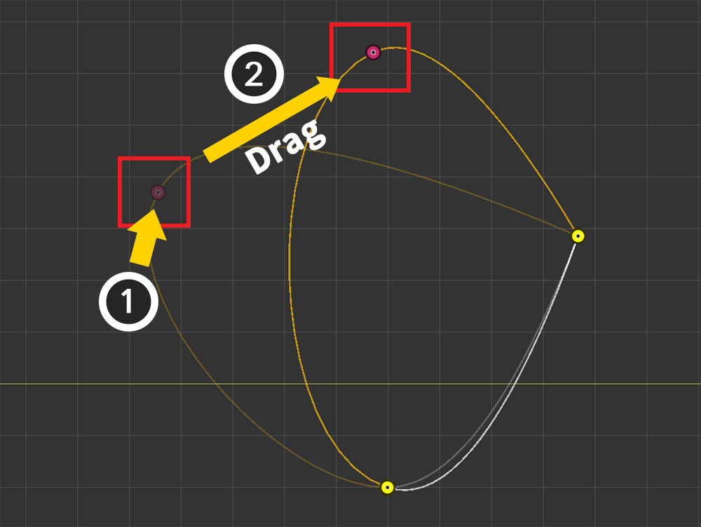
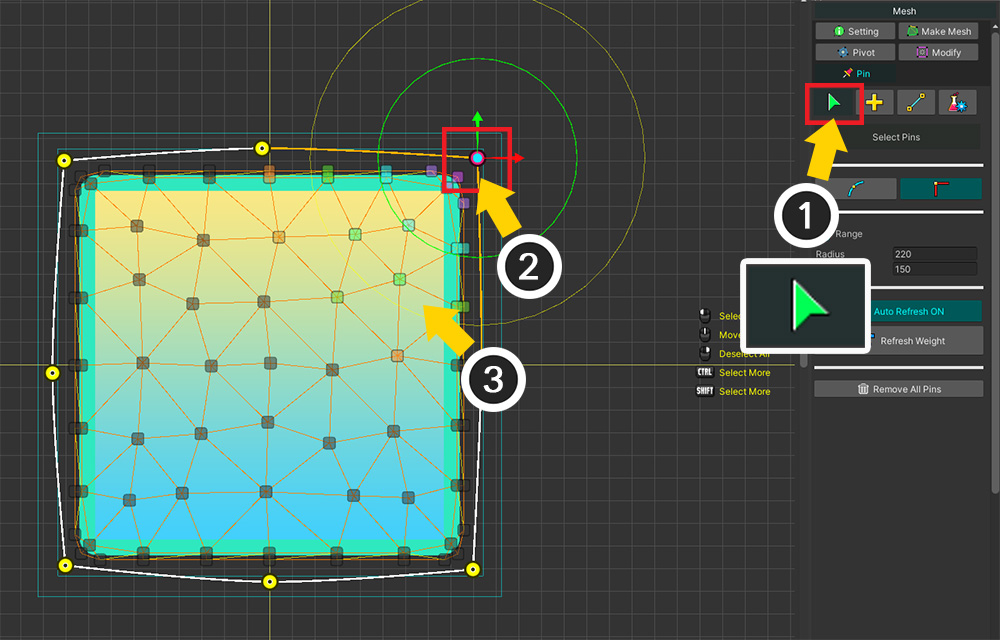
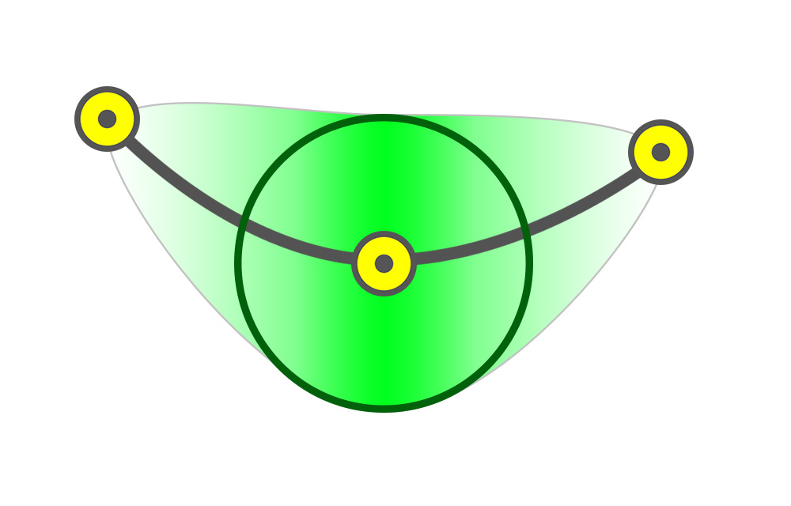
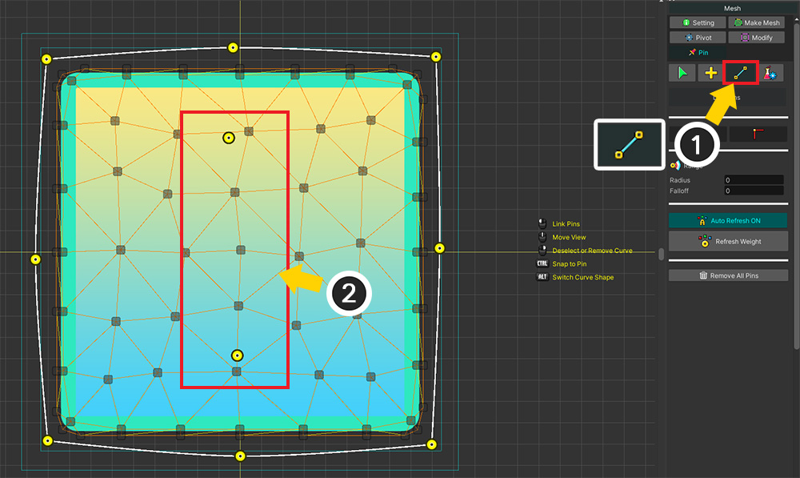
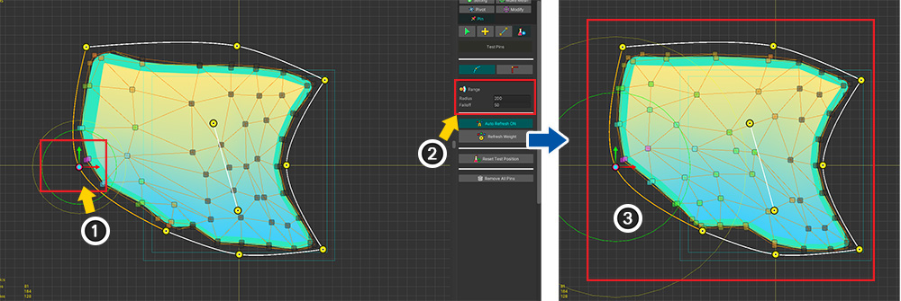
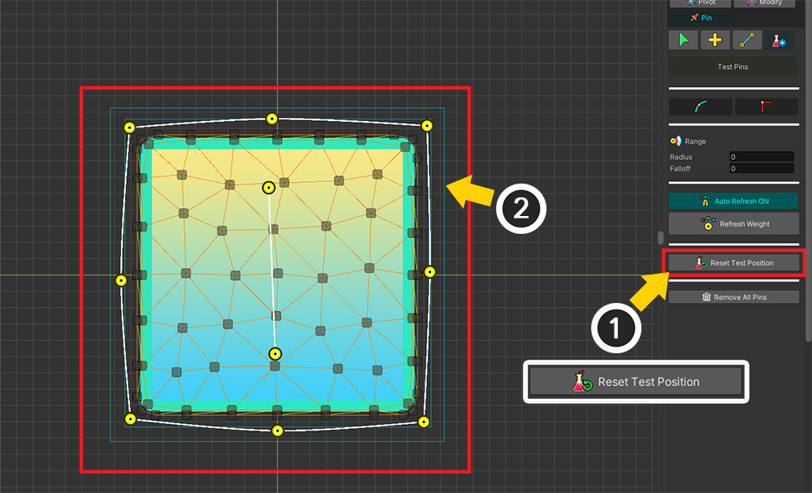
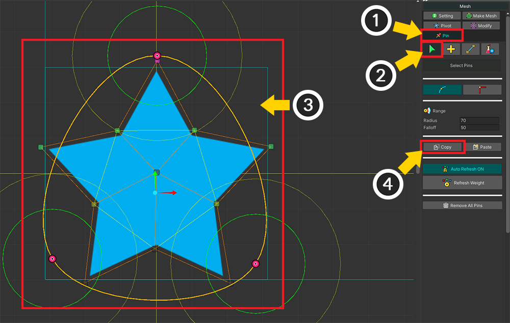

AnyPortrait > マニュアル > ピンの追加
ピンの追加
1.4.2
「Morphモディファイア」を使用すると、頂点の位置を変更してキャラクターの見た目を変えることができます。
この機能は強力ですが、非常に多くの頂点を持つメッシュを編集すると、作業はかなり面倒になります。
この状況で効果的に使用できる補助ツール「ピン（Pin）」が「AnyPortrait v1.4.0」に追加されました。
ピンの特徴 次のようになります。
- 少数のピンで複数の頂点を制御できます。
- ピンは曲線で接続されています。
- ピンと頂点は自動的に接続されます。
このページでは、メッシュにピンを追加する方法について説明します。
Morphモディファイアでピンを使用する方法は、関連ページで確認してください。

(1) 「メッシュ」を選択します。
(2) メッシュにかなり多くの頂点があることがわかります。 この時ピンを利用すると便利です。
(3) 「Pin」メニューを選択します。

「Pin」メニューを選択すると、上記のUIが表示されます。
1. 「ピンツール」 : 「選択」、「追加」、「接続」、「テスト」ツールです。
2. 「エッジオプション」 : 選択したピンのエッジの種類を設定します。
3. 「重み範囲（Range）」 : 頂点に接続するための範囲属性です。
4. 「Auto Refresh」 : 頂点またはピンに変更がある場合に自動的に重みを再計算するかどうか。
5. 「Refresh Weight」 : ピンと頂点間の重みを再計算します。
6. 「Remove All Pins」 : すべてのピンを削除します。


ピンを追加しましょう。
説明のために、画像に関係なく空のスペースにピンを追加しましょう。
(1) 「追加」ツールを選択します。
(2) ワークスペースで クリック してピンを作成します。
(3) 最初のピンが選択された状態でもう一度 クリック してピンを追加します。

(1) 2本のピンが直線で接続されていることがわかります。
(2) ピンが選択された状態でもう一度 クリック してピンを追加してみましょう。

3つのピンが曲線で接続されています。
「ピンツール」の最大の特徴は、曲線で接続されて丸い外観に適していることです。

(1) 再び最後に生成されたピンを クリック して選択します。
(2) 最初のピンを選択してみましょう。 Ctrl+クリック で簡単に選択できます。

3本のピンが循環する曲線に接続されています。

ピンは曲線状に接続されているため、頂点とは異なる点があります。
ピンに最大2つの異なるピンを接続することができ、他のピンは接続できません。
(1) すでに2つのピンに接続されているピンを選択し、 (2) 新しいピンを追加しましょう。

(3) 新しいピンが作成されましたが、これらのピンは接続されていないことを確認できます。

ピンを Alt+クリック すると、エッジの形状が上記のように変わります。

(1) ピンを選択し、 (2) ドラッグ でピンの位置を変更できます。
また、 マウスの右クリック を使用すると、ピンの選択を解除したり、ピンやカーブを削除したりできます。

説明に従って、上記のようにメッシュの画像に合わせて適切にピンを追加して接続しましょう。

ピンを選択してプロパティを変更しましょう。
(1) 「選択」ツールを選択します。
(2) 「ピン」を選択します。 このモードでは、ギズモを使用して選択および変形できます。
(3) このピンに接続された頂点の重みが色で表示されていることがわかります。

ピンの重み領域を修正してみましょう。
重みをどれだけ洗練されているかによって、将来の「Morph」操作がどれほど便利になるかが決まります。
(1) 「Range」オプションの「Radius」または「Falloff」属性を変更します。
(2) ワークスペースで円形の重み領域の大きさが変わることがわかります。 同時に、頂点の重みが変化することを視覚的に確認できます。

ピンの重み領域には2つの属性があります。
「Radius」の領域内では、重み値は「1」です。 直接影響を受ける頂点がこの領域内に入るように設定します。
「Falloff」は、徐々に重みが減る領域です。 重みが急激に減少するのを防ぎます。

しかし、重み領域は実際には円形ではなく、上記のような姿をしています。
曲線で接続されている他のピンとの重み付け補間が発生するため、もう少し広く重み付けされます。
また、補間により、「Radius」の範囲内でも距離に応じて重みが徐々に減少することがわかります。

複数のピンを選択して重みを同時に設定することも可能です。

生成されたピンを接続するツールを使用することもできます。
(1) 「接続」ツールを選択します。
(2) このツールが適用される2つのピンが用意されています。

順番にピンを選択すると、曲線が生成され、接続されます。

最後に、ピンが正しく追加され設定されていることを確認するツールについて説明します。
(1) 「テスト」ツールを選択します。
(2) ピンを選択するとギズモが表示されます。

(1) ピンを動かしてみると、接続された頂点が一緒に動いているのがわかります。
テストツールでは、ピンの位置を変更しても実際の値として保存されません。
また、重みに応じて頂点も一緒に動きます。
この点を利用してピンの属性、特に重み領域を修正するのに有効です。
（ピンの他の属性は保存されます。）

上記の修正はテストツールで行うことができます。
(1) ピンを選択して動かしてみます。
(2) 頂点がどのように動くかを確認して、重み領域の範囲を調整します。
(3) 重みが変更され、頂点が異なるように動くことがわかります。

(1) 「Reset Test Position」ボタンを押すと、
(2) ピンのテスト位置はすべて初期化されます。
続く内容は「「Morph」モディファイヤでの「ピン」の使用」ページで引き続き確認してください！
ピンを別のメッシュにコピー

(1) 「Pin」メニューを選択します。
(2) 「選択」ツールを選択します。
(3) コピーしたいピンを選択してください。
(4) 「Copy」ボタンを押します。

(1) ピンを貼り付ける別のメッシュを選択します。
(2) 「Pin」メニュー > 「選択」ツールを選択します。
(3) 「Paste」ボタンを押します。
(4) どのように貼り付けるかを尋ねるダイアログが表示されます。

(1) このメッシュは「Pivot」が適切に設定されているため、「Relative To Pivot」でオプションを変更して「Paste」ボタンを押します。
（貼り付けオプションについては、「関連ページ」で詳細な説明を見ることができます。）

ピンがターゲットメッシュにコピーされていることがわかります。